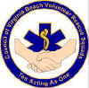
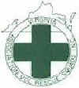
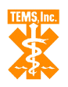

| |
K E M P S V I L L E V O L U N T E E R R E S C U E S Q U A D |
Associated Organizations |
Add or view comments. |
By municipal ordinance, this agency regulates all aspects of Virginia Beach's emergency medical system, including the operational matters of the city's eleven volunteer rescue squads.
The agency that issues our license to operate as a Basic and Advanced Life Support
Transport agency within the Commonwealth of Virginia.
A coalition of the
independent volunteer rescue squad corporations that serve
the City of Virginia Beach. Recognized by municipal ordinance as the advisory body to the
Virginia Beach City Council and to the City Manager on matters pertaining to the city's
emergency medical services. (Bylaws: view / pgp-authenticate / edit)
A coalition of volunteer rescue squads in Virginia. KVRS is in VAVRS District II.
One of eight EMS councils designated by the Virginia Board of Health. Its goal, as
required in the Code of Virginia, is the development and implementation of an efficient
and effective regional EMS delivery system.
{kind=link}
{kind=link}
{kind=link}
{kind=link}